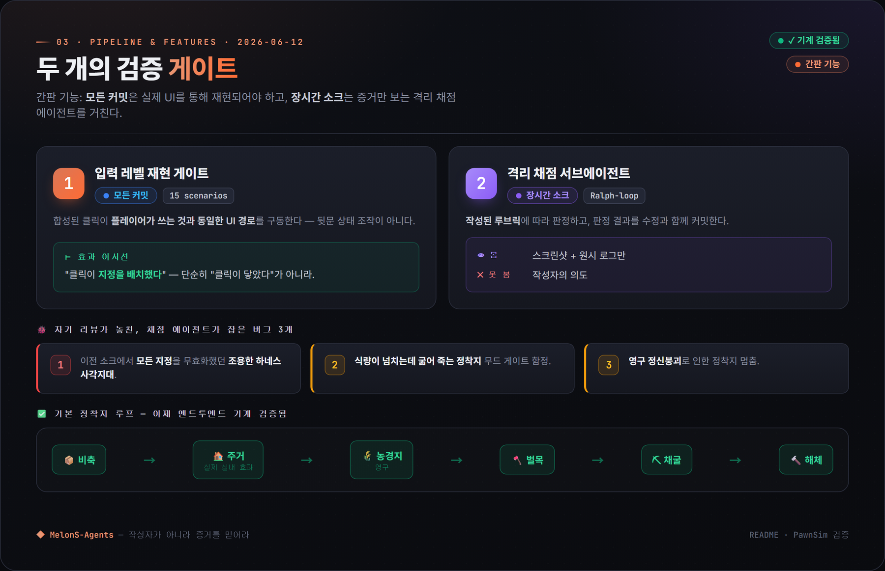
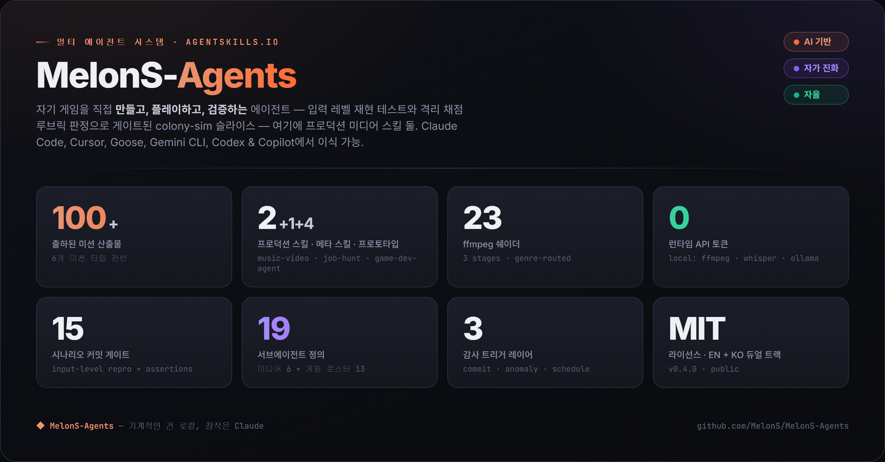
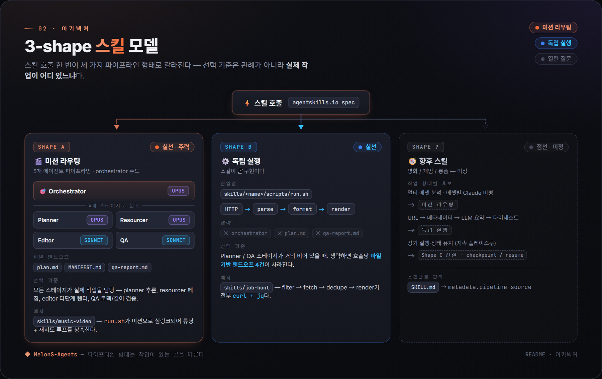
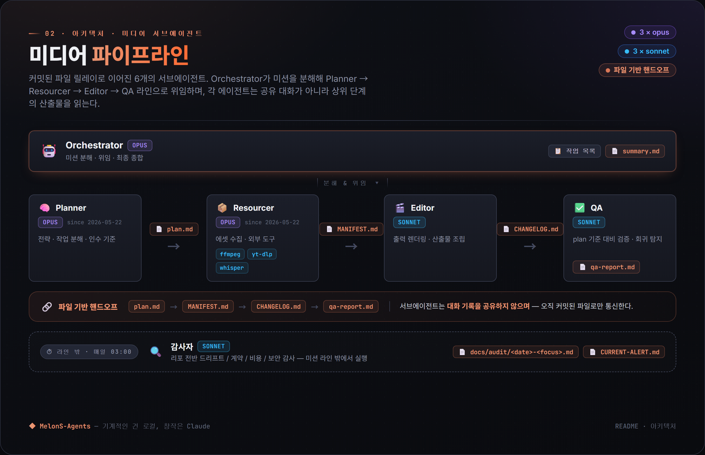
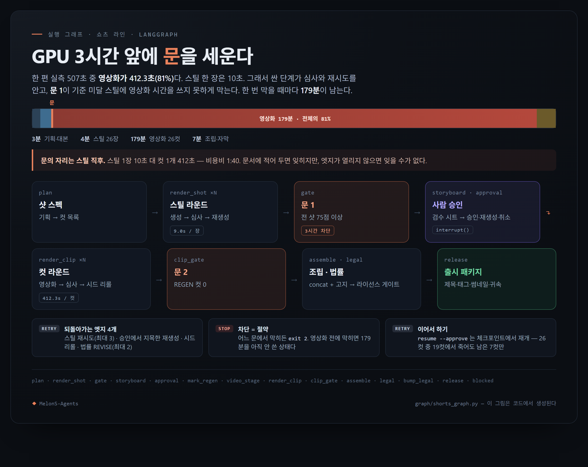
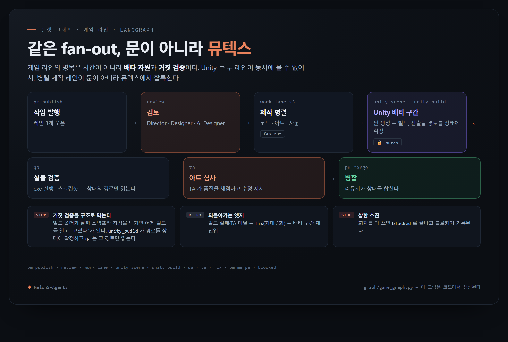
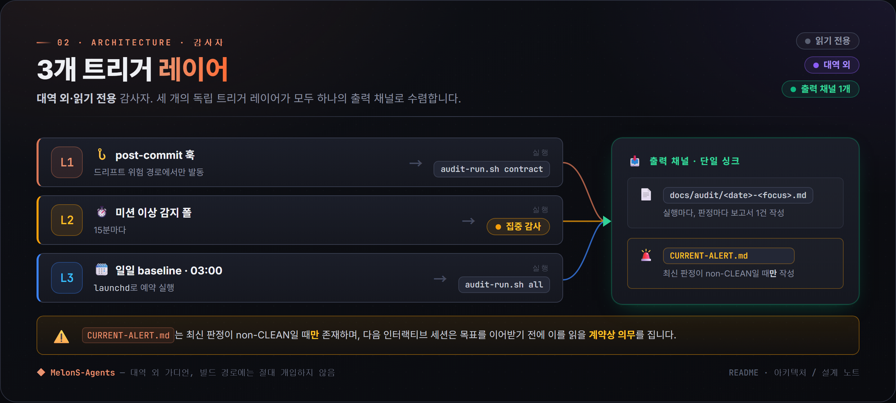

스스로 게임을 만들고 — 검증까지 하는 에이전트.
PawnSim 콜로니심 · 미디어 스킬 2종 · 사람 개입 운영 · 런타임 $0 · EN + KO
AI-PoweredSelf-EvolvingAutonomous
지금 가장 활발한 작업은 PawnSim — 에이전트가 직접 만들고 동시에 플레이테스트하는 콜로니심 버티컬 슬라이스입니다. 간판은 기능이 아니라 검증입니다: 코드가 있다 ≠ 작동이 검증됐다. 프로덕션 미디어 스킬(music-video)과 보류 중인 스킬(job-hunt)이 함께 올라가 있고, 모든 기계적 단계는 런타임 비용 $0으로 로컬에서 돌며, 레포는 매 커밋마다 자기 자신을 감사합니다.
모든 커밋은 22시나리오 입력 레벨 재현 테스트로 게이팅됩니다 — 플레이어와 같은 UI 경로로 클릭을 합성하고, "클릭이 눌렸다"가 아니라 효과까지 어서트합니다.
장시간 무인 소크는 격리 채점 서브에이전트가 작성된 루브릭으로 판정합니다 — 작업자의 의도는 일절 모른 채 증거(스크린샷 + 원본 로그)만 봅니다.
미디어 스킬 2종: music-video(트랙 → phrase-aware 컷 + 빈티지 쉐이더 23종을 입힌 9:16 쇼츠)와 job-hunt(seed 키워드 하나 → 중복 제거된 한국 채용공고 다이제스트 — 현재 보류, KR 잡보드가 스크래핑을 차단).
기계적 단계는 로컬에 머물고(Unity batchmode, aubio, whisper.cpp, ffmpeg), 창작 단계만 운영자의 기존 구독으로 Claude를 씁니다.
지금 가장 활발한 표면은 PawnSim, 탑다운 콜로니심 버티컬 슬라이스(Unity 6000.0.75f1 LTS)입니다. 모든 스프라이트(3방향 걷기·작업 시트, 동물, 지형, 가구까지 전부 절차 생성한 32px 아트), 모든 씬, 모든 C# 시스템이 game-dev-agent 메타 스킬로 CLI 스캐폴딩되며 Unity 에디터 수작업이 전혀 없습니다 — .exe 전체가 커맨드라인에서 재현됩니다. 콜로니스트는 유틸리티 AI로 벌목·채광·농사·요리·운반·건축·연구·전투를 하고, AI 디렉터가 예측 불가능한 시점에 습격을 보내며, 플레이어는 림을 징집하고 건축·지정 명령을 내립니다.

검증 게이트 두 개 — README · PawnSim 검증
간판은 기능이 아니라 검증
북극성은 "코드가 있다 ≠ 작동이 검증됐다"입니다. 두 레이어가 이를 떠받칩니다:
22시나리오 입력 레벨 재현 게이트 — 매 커밋마다 실제 합성 클릭이 플레이어와 같은 UI 경로로 돌며 효과 어서션을 검사합니다: "클릭이 지정을 만들었다", "벽이 지어졌다", "선택한 나무만 잘렸다" — 단순히 "클릭이 눌렸다"가 아닙니다.
격리 채점 소크 루프 — 장시간 무인 소크는 별도 서브에이전트가 작성된 루브릭으로 판정합니다. 채점자는 증거(스크린샷 + 원본 로그)만 보고 작업자의 의도는 보지 않아, 작업자 자기 채점 편향을 차단합니다.
게이트가 실패하면 전진은 없습니다: 즉시 수정하거나 롤백. 기본 콜로니 루프(저장 → 실내 효과가 실재하는 집 → 영구 농장 → 벌목 → 채광 → 철거)는 끝에서 끝까지 기계 검증되고, 채점 평결은 수정 커밋과 함께 저장됩니다.
채점이 자기 검토로는 못 본 것
평결은 작업자 자기 검토가 지나친 결함을 반복해서 들춰냈습니다 — 이 루프가 비용값을 한다는 정직한 증거입니다:
이전 소크들에서 모든 지정을 무효화하던 테스트 사각지대(검증 도구 자체가 망가져 있었음 — "검증 도구도 검증돼야 한다").
식량이 쌓여 있는데 굶어 죽던 무드 게이트 함정.
콜로니 전체가 영구 멈추던 멘탈 브레이크 동결.
정직하게 추적 중인 미해결 결함도 남아 있습니다 — 일부 저장/불러오기 엔티티 하위 상태가 아직 직렬화되지 않고, 무드 경제가 여전히 약간 적자입니다(공식 인정된 하나의 미해결 게임플레이 문제). 전체 정직 검증 상태는 skills/game-prototype/README.md.
사람 개입 운영
에이전트는 오픈 루프로 돌지 않습니다. 운영자가 빌드를 플레이하고 인게임 피드백을 올리면, 그 피드백이 다음 게이트 통과 수정 배치가 됩니다 — 운영자 → 에이전트 → 검증 → 운영자 사이클입니다. 로직 변경(림 행동, 밸런스)은 명시적으로 운영자 게이팅: 에이전트가 스펙 초안을 잡고 OK를 기다린 뒤에야 손댑니다.
레포가 미디어 미션에 적용하는 것과 같은 사람 개입 패턴입니다: 에이전트가 모든 기계 작업을 하고, 사람은 취향·돈·로직 승인을 가집니다.
기본 루프 끝까지 검증 벽 + 지붕 · 농장 · 저장 구역 · 이름표 콜로니스트야간 사이클 침대 3등급 · 수면 상태 · 야간 틴트 조명
이를 스캐폴딩하는 메타 스킬: skills/game-dev-agent/. PawnSim은 Unity / Windows 1차(빌드 체인이 에디터를 batchmode로 구동); 레포의 나머지는 macOS / Linux입니다.
독자 · 누구를 위한 것인가
이 프로젝트는 누구를 위한 것인가
에이전트가 게임을 만들기만 하는 게 아니라 직접 검증까지 하는 모습을 보고 싶은 분. PawnSim은 매 커밋마다 22시나리오 입력 레벨 재현 게이트를 통과하고, 장시간 소크는 격리 채점 루브릭 루프를 거칩니다 — 인수 기준은 작업자의 주장이 아니라 채점 평결이고, 수정 커밋과 함께 저장됩니다.
파이프라인 코드를 짜지 않고도 숏폼 세로 영상을 만들고 싶은 분. 마법사에 음악 파일 하나 넘기면 비트 정렬 컷 + 빈티지 쉐이더가 적용된 9:16 쇼츠가 돌아옵니다. 프리미어·애프터이펙트·GUI 다 필요 없습니다.
마법처럼 포장하지 않는, 실제로 돌아가는 멀티 에이전트 시스템을 관찰하고 싶은 분. 모든 커밋이 시스템이 진화하는 과정의 관찰 가능한 한 걸음입니다. docs/audit/가 감사가 잡은 모든 드리프트를 기록하고, 아래 품질·자율성 차트가 그 주장이 시간이 지나도 유지되는지 보여줍니다.
실제 검색 방식에 맞춰진 한국 잡보드 다이제스트 스킬을 보고 싶은 분 — 현재 보류.--seed "Problem Solver" 한 줄이면, 회사마다 다르게 부르는 26개 동의어 타이틀(FDE / Applied AI Engineer / Generalist / Founding Engineer / …)로 확장해 11개 소스를 대상으로 합니다. KR 잡보드가 스크래핑을 막아 지금은 mock/dry-run 데이터로만 동작하며, 라이브인 척하지 않고 코드는 트리에 남겨뒀습니다.
다른 런타임에 drop-in 가능한 agentskills.io 호환 Skill이 필요한 분. 두 스킬 모두 Claude Code, Cursor, Goose, Gemini CLI, OpenAI Codex, GitHub Copilot 외 ~38개 호환 런타임에서 동작합니다.
파이프라인을 가려놓은 SaaS가 필요하다면 이 레포는 아닙니다. 모든 단계를 검사 가능한 bash + 오픈소스 로컬 도구(ffmpeg / whisper.cpp / ollama / aubio)로 보고 싶다면, 맞습니다.
아키텍처 · 작동 방식
작동 방식
스캐폴드는 범용입니다 — 모든 스킬을 한 가지 shape으로 강요하지 않습니다. 숏폼 영상이 v1 도메인이었고(결과물이 눈에 보이고 실패 모드가 빨리 잡힘), 현재 개발 포커스는 게임 트랙(위 PawnSim 만들고-검증 루프)으로 game-dev-agent 메타 스킬이 구동합니다. 오늘 프로덕션 미디어 스킬 1종이 올라가 있습니다: music-video 미션. standalone job-hunt 스킬은 보류 중입니다(KR 잡보드가 스크래핑을 차단). 이전 미션들(faceless-short 내레이션, v1 highlight / shorts-batch)은 대체 경로로 트리에 남아 있습니다.

시스템 한눈에 보기 — README · Overview

호출 하나, 세 가지 파이프라인 shape — README · Architecture
— 게임 트랙 · 현재 포커스
game-dev-agent (메타 스킬, Skill #3)
에디터 수작업 없이 게임 전체를 CLI 스캐폴딩하는 Unity 전용 에이전트입니다: 스프라이트 생성(32px 절차 아트), C# 시스템 스캐폴딩, Unity batchmode 씬 + 프리팹 생성, 밸런스 튜닝, 오디오 생성, 인게임 AI 디렉터. 이 에이전트가 경험적 검증 표면을 겸하는 프로토타입 스킬 4종을 구동합니다 — PawnSim(콜로니심 플래그십), 그리고 2D 물리 병합 퍼즐, 웨이브 생존 액션, 슬라이딩 타일 숫자 퍼즐 — 각각 앞 것보다 빠르게 만들어 "복리 가속" 가설을 테스트합니다.
게임 트랙은 6개 코어 미디어 파이프라인 에이전트 위에 13개 게임 도메인 서브에이전트(디렉터 / 디자이너 / 프로그래머 / 빌드 엔지니어 / QA / 아티스트 / 사운드 / 내러티브 / 스페셜리스트) 로스터를, content-shorts 파이프라인용 5개를, 그리고 기획·스틸·컷을 채점하는 심사위원 3개를 더 돌립니다 — .claude/agents/에 총 27개 에이전트 정의.
— 미디어 파이프라인 · music-video 미션

-.md와 CURRENT-ALERT.md를 씁니다." loading="lazy" decoding="async">
6개 서브에이전트, 파일 기반 핸드오프 — README · Architecture
— 실행 그래프 · 쇼츠 제작 (LangGraph)

쇼츠 제작 구조도 — 비싼 단계(412초/컷) 앞에 문을 세운다 · 실행 그래프에서 생성
— 실행 그래프 · 게임 제작 (LangGraph)

게임 제작 구조도 — Unity 배타 자원 앞에서 뮤텍스로 합류 · 실행 그래프에서 생성
파이프라인 (music-video 미션)
비트 추출.aubiotrack이 실제 비트를 찾고 서브 비트 노이즈는 버립니다. 컷은 N번째 비트마다(기본 12 — 95 BPM에서 약 7.5초당 한 컷).
Phrase 정렬.aubioonset이 드럼 hit을 감지. 분위기별 가변 클립 setpts: 정적 0.55×, 앰비언트 0.70×, 액티브 0.80×, 자연 1.00× — 음악이 비주얼 속도를 끕니다.
B-roll. mood-keyword Pexels Videos API fetch + 윈도우별 선택. 데모 모드는 키 없는 첫 실행을 위해 CC-BY Blender 오픈무비 클립을 번들합니다.
글리치 마이크로 에디트. 검출된 드럼 onset에 0.2초 역재생 + 0.2초 forward jump-cut, 단 정적-카메라로 분류된 클립에만 적용해 글리치 중 프레임이 흔들리지 않게.
빈티지 lo-fi 쉐이더. 필름 그레인 + 비네팅 + 가우시안 줌-펄스 + phrase-aware pond 잔물결 + halation 블룸. 전부 순수 ffmpeg 필터 그래프 — GLSL도 외부 렌더러도 없음.
렌더 + QA. ffmpeg 9:16 화면 채움, 실패 시 미션 레벨 재시도.
품질 바 — 시스템이 enforce하는 5개 계약
2026-05-22 music-video QA 패스가 이전 파이프라인이 조용히 어겨온 6개 취향 디렉티브를 들춰냈습니다. 다섯은 enforce되는 계약으로 안착했고, 여섯 번째는 연구 방향으로 열려 있습니다. 케이스 스터디 #9가 그 프레이밍을 씁니다: 버그는 렌더가 아니라 계약이 코드로 표현되지 못한 것이었다.
A.1 — B-roll dedup 레지스트리.records/youtube/broll-used.txt(271개 id seeded). 두 Pexels 호출자가 참조 + append.
A.2 — 가사 vocal-onset 정렬.scripts/music-video-lyric-align.sh가 일반 텍스트 + 오디오에서 whisper로 LRC를 도출(KR 워드 레벨, EN 세그먼트 레벨).
의도적으로 보류 — cel-shading / 카툰(GLSL / EbSynth / AI 스타일라이즈 필요). 케이스 스터디 #5 참조.
— 감사 & 비용 · 자기를 감시하는 레포

-.md에 리포트 1건을 쓰고, CURRENT-ALERT.md는 최신 verdict이 비-CLEAN일 때만 쓰이며, 다음 인터랙티브 세션은 목표를 잡기 전 이를 의무적으로 읽음." loading="lazy" decoding="async">
트리거 레이어 3개, 출력 싱크 1개 — README · Architecture / Design notes
3-레이어 리액티브 감사
L1 — post-commit 훅. 드리프트 위험 커밋(agents/, .claude/agents/, config/, CLAUDE.md, 운영 계약 하위)이 ~30초 안에 audit-run.sh contract를 발화.
L2 — 15분 미션 이상 감지 폴. 새 blocker 파일이나 QA-FAIL 폭증이 집중 감사를 트리거. 이상 없으면 no-op(토큰 0).
L3 — 매일 03:00 베이스라인. launchd가 전체 스윕을 발화. L1 + L2가 놓친 것을 잡음.
패턴은 Observer가 아니라 Reactor + Hook(파일을 이벤트로) — 이 레포의 서브에이전트는 장기 실행 observable이 아닙니다.
비용 라우팅 규칙
실제 실패에서 얻은 아키텍처 교훈: "Tier 2(로컬) = 기본"을 모든 파이프라인 단계에 적용하면 품질 천장이 생깁니다.
기계적·고볼륨 단계(전사, 렌더, fetch, 비트 검출) — 로컬. 규모에서 토큰 비용이 감당 불가.
일회성 창작 단계(스크립트 후크, 사실 프레이밍, mood-keyword 추출) — Claude. 호출당 ~500 토큰, 기존 구독 쿼터 대비 운영상 무시 가능, 품질은 이후 60초 시청 동안 복리로 작용.
Skill #2, standalone, v2 짧은 키워드 UX — 보류: 대상이었던 KR 잡보드(사람인 / 잡코리아 / 원티드 / 프로그래머스)가 스크래핑을 막아 지금은 mock/dry-run 데이터로만 동작합니다. global-* ATS/RemoteOK/Remotive/HN 플러그인은 여전히 라이브 원격 공고를 반환할 수 있습니다. 70개 테스트; JH_*_LIVE 플래그 뒤의 enrichment 유틸 4종. 스펙: skills/job-hunt/
🎮game-dev-agent개발 중
Unity 프롬프트 → CLI 스캐폴딩된 게임
검증 표면 = PawnSim 콜로니심
13-에이전트 게임 로스터
Unity 에디터 수작업 0
프로덕션 스킬 2개에는 미포함
Skill #3, 위 메타 스킬 — 스프라이트 생성, C# 스캐폴딩, 밸런스 튜닝, 오디오 생성, 인게임 AI 디렉터.
📦product-cf보류
제품 사진 1장 → CF풍 9:16 쇼츠
정직한 부정적 결론으로 보류
무료/로컬 3D가 16GB에서 바를 못 넘김
유료 클라우드 i2v나 더 큰 GPU 필요
트리에 남기되 게이트 오프
실험적 v0.1.0 — 설득력 있는 제품 모션은 무료/로컬 경로가 못 내는 유료 클라우드 image-to-video가 필요.
파이프라인은 오픈 agentskills.io 표준을 따르는 이식 가능한 Skill로 패키징됩니다 — 한 번 작성한 스킬이 여러 호환 런타임(Claude Code, Cursor, Goose, Gemini CLI, OpenAI Codex, GitHub Copilot 등)을 타깃할 수 있습니다.
Skill #2 — job-hunt 상세
별도 shape 스킬: standalone(미션 라우팅 없음), v2 짧은 키워드 UX, agentskills.io 호환. 보류 — 대상이었던 KR 잡보드(사람인 / 잡코리아 / 원티드 / 프로그래머스)가 스크래핑을 막아 라이브 다이제스트가 완성되지 못했고, 지금은 mock/dry-run 데이터로만 동작합니다. --seed "Problem Solver"를 넘기면 오케스트레이터가 26 동의어 role family(Forward Deployed Engineer / Applied AI Engineer / Generalist / Founding Engineer / …)로 확장합니다. mock 실행은 5,000+ raw 공고를 ~200 매칭으로 중복 제거하며, 코드는 트리에 남아 있습니다.
소스 플러그인 11개(키 없이 라이브 5, 키 게이팅 2, mock-fallback 4) — 기본은 전부 mock-fallback; 플러그인별 라이브 HTTP는 JH_SOURCE_LIVE=1 뒤.
이전 faceless-short 미션은 여전히 트리에 있습니다. 토픽 프롬프트 → 내레이션 60초 쇼츠: Sonnet이 후크 + 사실 프레이밍 초안, Kokoro-ONNX(영어) 또는 macOS Yuna(한국어)가 음성 합성, whisper.cpp가 자막 타이밍 전사, 캡션 키워드로 윈도우별 Pexels B-roll 선택, ffmpeg가 단일 라인 자막 번인. 토픽 기반 콘텐츠용으로 보존; 현재 프로덕션 포맷은 아님.
scripts/audit-skill-drift.sh — 13번째 감사 룰. 각 스킬의 LIVE 플래그 매니페스트가 실제 스크립트 게이팅과 일치하는지 검증.
scripts/statusline.sh — Claude Code statusline. doctor:⚠N · goal:N/M · audit⚠를 dir / branch / model / cost와 함께 렌더.
scripts/morning-brief.sh — 단일 명령 overnight 다이제스트. doctor + 감사 + 7일 개입 추세 + 커밋 attribution + 자율 결정 + review-queue + blocker를 ~30줄로 결합.
outputs/review-queue/ + 스크립트 3개 — batched 취향 결정 큐. 운영자가 contact-sheet 마크다운을 자기 cadence로 드레인, 개입 이벤트 ~10배 감소.
메타 스킬 goal-lock이 docs/goal.md를 파싱해 미체크 deliverable 하위 목표를 보고, 장시간 자율 세션이 다시 정박할 수 있게 합니다. 전체 도구별 표: docs/operator-tooling.md.
증거 · 무엇을 만드는가
증거 — 파이프라인이 실제로 만드는 것
렌더된 mp4에서 캡처한 프레임입니다. 전체 mp4는 records/missions/ 하위에 있습니다(gitignore — 각 ~25–50 MB).
music-video noir-detective — 2026-05-22 배치, t = 30초. 장르별 grade_profile(rnb_low_key)이 pink-magenta low-key 룩을 잡고, 그 위에 phrase-aware 쉐이더 스택.
장르 카탈로그 한눈에 — 7개 그레이드 프로필 중 6개
2026-05-20 → 2026-05-23 프로덕션 배치의 중반 클라이맥스 프레임들. cherry-pick B-roll 없음 — 모든 클립이 파이프라인이 늘 돌리는 같은 무인 Pexels mood-keyword fetch에서 나왔습니다. 비주얼 정체성은 소스 footage가 아니라 grade_profile + 쉐이더 스택입니다. 7개 그레이드 프로필이 scripts/music-video-grade.sh로 ffmpeg 필터 그래프로 컴파일됨(아래 6개 표시); 19개 장르 preset은 skills/music-video/data/genre-presets.yaml.
같은 스톡 입력, 장르 코딩된 룩 출력 — README · Genre catalog
noir-detective rnb_low_keyrain-lofi lofi_warm_grainarcade-synthwave city_pop_neoncoastline-summer hollywood_teal_orangelinen-minimal kr_warm_pastelsmallhand-folk + 키네틱 가사 오버레이
Skill #2 — job-hunt 다이제스트는 이렇게 생겼다
seed 키워드 하나 입력, 중복 제거된 마크다운 다이제스트 출력. 아래 mock-fallback 렌더링은 docs/samples/job-hunt-digest-mock.md에서 — 기본 5개 소스 전부 대상, 26 동의어 problem-solver family 확장, 7/21 raw 공고 매칭. 실제 다이제스트는 records/jobs/<date>/digest.md 하위에 생성(gitignore).
# Job-hunt digest — 2026-05-20
> Seed: Problem Solver → role family problem-solver
> (26 synonym keywords expanded)
> Sources: _mock, kr-wanted, kr-programmers, kr-jobkorea, kr-saramin
> Total postings: 7 — 0 new since last digest
### _mock (3)
- Problem Solver (AI Agent) · MockRebeatLike
지역: 서울 강남구 · 게시: 2026-05-20
요약: 쇼핑 AI Agent 기획+개발+배포까지 직접 담당. PMF 탐색 사이클 주도.
- Forward Deployed Engineer · MockFrontierAI
지역: 원격 · 게시: 2026-05-20
요약: Build AI agent solutions; framing problems → shipping LLM
prototypes within weeks.
- Generalist · MockKRStartup
지역: 서울 마포구 · 게시: 2026-05-19
요약: PM+Engineer+Data Analyst 하이브리드. Ship MVPs, iterate to PMF.
### kr-wanted (1) · kr-programmers (1) · kr-jobkorea (1) · kr-saramin (1)
…
Faceless-short 갤러리 (참고용 — 내레이션 시대 파이프라인)
이전 faceless-short 시도의 프레임들 — music-video 피벗 이전 내레이션 시대 파이프라인의 시각적 증거로 보존.
Hittites ENHydrogen ENAutoTune ENHittites KO
Faceless 시대 점수표 참고용
다섯 리텐션 매핑 축(후크, 영상-자막 매칭, 가독성, 사실 일관성, 마감)에 걸친 자기 평가로, faceless-short 반복 중 Claude가 매겼습니다 — music-video 피벗 이전 v4 → v5 → v6 시퀀스의 구조화된 진행 신호로 보존. music-video 미션은 차원별 점수 대신 플랫폼 시청 시간 데이터로 평가; per-video metrics는 docs/pilots/ 하위.
운영자 개입 추세 (자율성 신호)
사람이 계속 조타해야 하는 멀티 에이전트 시스템은 사실 대체하려던 일을 대체하지 못한 것입니다. 매일 02:00 KST 갱신되는 투-패널 정직 신호 — Panel A는 git log(커밋 attribution + 레버리지 비율), Panel B는 로컬 Claude Code 세션 JSONL(운영자 프롬프트 수 + 활성 세션 분). 추세에 작용하는 5개 우선순위 감소 레버는 케이스 스터디 #8 참조.
과거(렌더 시대) 차트, 마지막 갱신 2026-05-25. 2026-06부터 개발 포커스가 PawnSim 게임 트랙으로 이동했고, 그 작업은 렌더 미션이 아니라 검증 게이트 통과 커밋(위 자율성 추세 참조)으로 나타납니다 — 따라서 이 차트는 더 이상 현재 신호가 아니며, 위 점수표와 같은 방식으로 렌더 시대의 기록으로 보존합니다. 시스템의 렌더 진화를 한눈에 보여줍니다: 2026-05-17 spike(8 → 33 missions/day)는 faceless 파일럿 배치, 피벗 이후 평탄 구간은 일일 3–8 렌더의 sustainable cadence로 정착한 music-video 포맷. 모든 records/missions/<date>/<id>/qa-report.md의 Verdict: PASS|FAIL과 attempt N of M을 파싱.


![스킬 포트폴리오: 프로덕션 미디어 스킬 2종, 개발 중 Unity 메타 스킬 1종, 보류 실험 1종 — 각 카드가 입력과 출력을 보여줌. music-video(프로덕션): 음악 파일 → 60초 9:16 세로 쇼츠; ffmpeg 쉐이더 23, 그레이드 프로필 7, 장르 preset 19, aubiotrack 비트로 컷, aubioonset 드럼 hit으로 글리치, Shape A 5-에이전트 미션 파이프라인. job-hunt(보류): seed 키워드 1개 → 중복 제거 마크다운 다이제스트; seed → 26 동의어 role family, 소스 플러그인 11, 라이브 키없음 5 / 키 게이팅 2 / mock 4, 5,000+ raw → ~200 매칭, Shape B standalone curl+jq. game-dev-agent(개발 중): Unity 메타 스킬 — 스프라이트 생성, C# 스캐폴딩, 밸런스 튜닝, 오디오 생성, 인게임 AI 디렉터; 검증 표면 = PawnSim 콜로니심, 게임 로스터 13, Unity 에디터 수작업 0으로 CLI 스캐폴딩. product-cf(보류): 제품 사진 1장 → CF풍 9:16 쇼츠; 정직한 부정적 결론으로 보류 — 무료/로컬 3D가 16GB 머신에서 품질 바를 못 넘김, 유료 클라우드 image-to-video나 더 큰 GPU 필요.](assets/visuals/02-skills-ko.png)